Welcome to Dr. Chickens Expert
Dr. Chickens Expert: In This website, you will learn about every type of chicken (51 types). You can also find that which of them is yours!Since: 2022 | Made in: Pakistan
About Chickens
The chicken is a domesticated junglefowl species, with attributes of wild species such as the grey and the Ceylon junglefowl that are originally from Southeastern Asia. Rooster or cock is a term for an adult male bird, and a younger male may be called a cockerel. Text by wikipedia
Native Chickens
Chickens have lived in rural villages throughout Africa and the Pacific for centuries and have adapted to the local environment and conditions. These village chickens are referred to as 'indigenous', 'native', 'local' or 'traditional' poultry and are easy to distinguish from standardised commercial or heritage breeds. Text by kyeemafoundation
With any luck and barring any genetic issues, These chickens should live for 8-12 years, with some chickens being reported to have lived for 15-20 years! Text by Fresh eggs daily.blog
Each hen will lay an average of 150 eggs annually. Only 75% or about 112 eggs from each hen will be allowed to hatch from which 95% or about 106 will reach market.
Native chickens should be provided with ample housing structures where they can roost during the night, find shelter during rainy weather, and build nests when they are of laying age. Provide adequate range type housing for growers and breeders with 1-2 square meters per bird. Text by Manila Bulettin
Despite the popularity of broiler chicken in urban or urbanizing areas, native chicken remains a preferred alternative meat because of its eating quality (distinctively savory, lean and finely textured meat) and health benefits despite its premium price. Text by Department of Agriculture
Silkie Chickens:
The Silkie (also known as the Silky or Chinese silk chicken) is a breed of chicken named for its atypically fluffy plumage, which is said to feel like silk.
Skin color: black or brown or blue
Egg color: cream or tinted
Egg size: Tiny
Recognized variety: Bearded Black, Bearded Blue, Bearded Buff
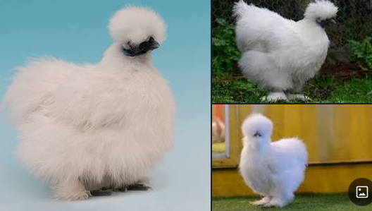
Broilers:
A broiler is any chicken that is bred and raised specifically for meat production. Most commercial broilers reach slaughter weight between four and six weeks of age, although slower growing breeds reach slaughter weight at approximately 14 weeks of age. Typical broilers have white feathers and yellowish skin.
Skin color: Yellow, brown, black or mixed
Use: Meat/feathers (Primary use: meat)
Origin: United States
Origin: United States
Egg color: white/light brown
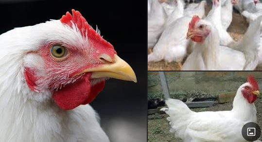
Brahma:
A Brahma chicken holds the record as being the heaviest chicken known. Text by A-Z Animals
The Brahma is an American breed of chicken. It was developed in the United States from birds imported from the Chinese port of Shanghai, and was the principal American meat breed from the 1850s until about 1930.
Primary use: Egg, Meat
Egg production (annual): 150
Egg size: Large
Temperament: Calm
Recognized variety: Buff, Dark, Light
Egg color: Brown
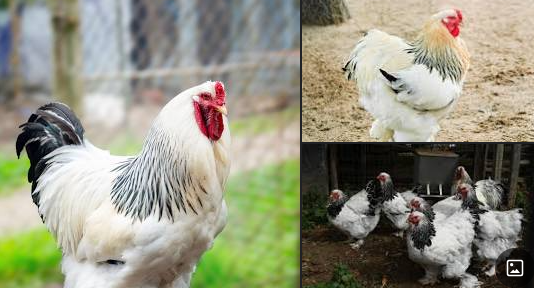
Plymouth Rock Chicken
Plymouth Rock chickens don't only make good layers. They are also considered a heavyweight chicken, with males weighing almost 10 pounds. These large bodied birds are excellent meat chickens. Text by Heritage Acres Market LLC.
The Plymouth Rock is an American breed of domestic chicken. It was first seen in Massachusetts in the nineteenth century, and for much of the early twentieth century was the most widely kept chicken breed in the United States. It is a dual-purpose chicken, raised both for its meat and for its brown eggs.
Primary use: Egg, Meat
Egg production (Annual): 210
Egg size: Large
Temperament: Calm
Recognized variety: Blue, Black, White
Egg color: Brown
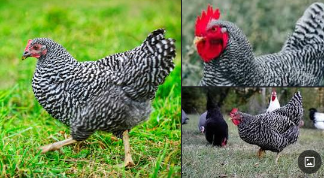
Sussex
The Sussex is a British breed of dual-purpose chicken, reared both for its meat and for its eggs. Eight colours are recognised for both standard-sized and bantam fowl. A breed association, the Sussex Breed Club, was organised in 1903.
Primary use: Egg, Meat
Egg production (annual): 250
Egg size: Large
Temperament: docile, Alert
Recognized variety: Red, White, Silve.
Egg color: Cream, Tan, Brown
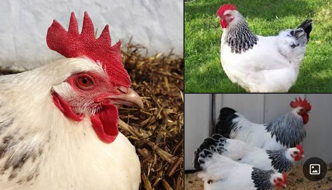
Ayam Kampong
The Ayam Kampong or Ayam Kampung is the chicken breed reported from Indonesia and Malaysia. The name means simply "free-range chicken" or literally "village chicken".
Origin: Indonesia, Malaysia
Egg color: white and light brown
Other names: Ayam Kampung
The eggs are quite large, and they are cream-colored with a very slight pink tint (not black). Text by The Happy Chicken Coop.

Ameraucana
The Ameraucana is an American breed of domestic chicken. It was developed in the United States in the 1970s, and derives from Araucana chickens brought from Chile. There are both standard-sized and bantam versions.
Primary use: Egg
Egg production (annual): 250
Temperament: Broody
Recognized variety: Wheaten, Blue, Black, White, Silver
Egg color: Blue
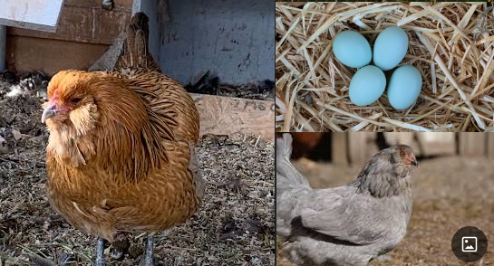
Leghorn
The Leghorn, Italian: Livorno or Livornese, is a breed of chicken originating in Tuscany, in central Italy. Birds were first exported to North America in 1828 from the Tuscan port city of Livorno, on the western coast of Italy.
Egg colour: white
Use: eggs
Skin colour: yellow: 114
Egg production (annual): 280
Temperament: Nervous
Recognized variety: Rose Comb Black, Rose Comb Buff
Egg color: White
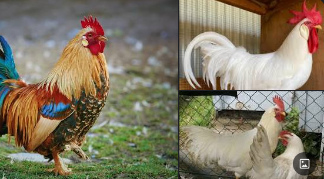
Ayam Cemani
The Ayam Cemani is a rare breed of chicken from Indonesia. They have a dominant gene that causes hyperpigmentation, making the chicken mostly black, including feathers, beak, and internal organs.
Primary use: ornamental
Egg production (annual): 80
Egg size: Small
Recognized variety: Black
Egg color: White
Price of chick: $50 each
Breeding pair: $5000 each pair

Polish Chicken
The Polish or Poland is a European breed of crested chickens known for its remarkable crest of feathers. The oldest accounts of these birds come from The Netherlands; their exact origins are unknown, however. In addition to combs, they are adorned with large crests that nearly cover the entirety of the head.
Primary use: Exhibition
Egg production (annual): 100
Egg size: Tiny
Recognized variety: Bearded Buff Laced, Bearded Golden
Egg color: White
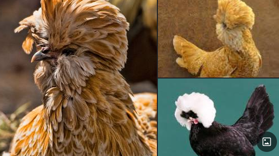
Rhode Island Red
The Rhode Island Red is an American breed of domestic chicken. It is the state bird of Rhode Island. It was developed there and in Massachusetts in the late nineteenth century, by cross-breeding birds of Oriental origin such as the Malay with brown Leghorn birds from Italy.
Primary use: Egg, Meat
Egg production (annual): 260
Egg size: Extra Large
Temperament: Hardy
Recognized variety: Rose Comb, Single Comb
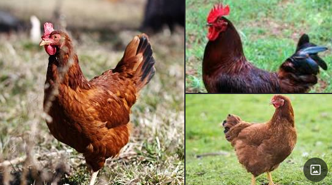
Indian Game
The Indian Game is a British breed of game chicken, now reared either for meat or show. It originated in the early nineteenth century in the counties of Cornwall and Devon in south-west England. It is a heavy, muscular bird with an unusually broad breast; the eggs are brown.
Primary use: Meat
Egg production (annual): 180
Egg size: Small
Temperament: Aggressive
Recognized variety: Black, White
Egg color: Light Brown

Marans
The Marans, French: Poule de Marans, is a French breed of dual-purpose chicken, reared both for meat and for its dark brown eggs. It originated in the town of Marans, in the département of Charente-Maritime, in the Nouvelle-Aquitaine region of south-western France.
Primary use: Egg (Other use: Meat)
Egg production (annual): 150
Egg size: Large.
Temperament: docile, Quiet
Recognized variety: Birchen, Black, Black Copper, Black Tailed Buff, Columbian, Cuckoo, Golden Cuckoo, Wheaten, White
Egg color: Dark Brown
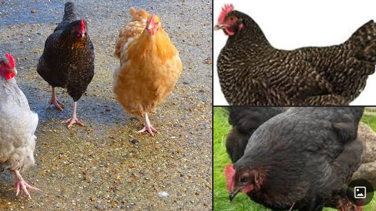
Orpington
The Orpington is a British breed of chicken. It was bred in the late nineteenth century by William Cook of Orpington, Kent, in south-east England. It was intended to be a dual-purpose breed, to be reared both for eggs and for meat, but soon became exclusively a show bird.
Primary use: Egg, Meat
Egg production (annual): 160
Egg size: Large
Temperament: Calm
Recognized variety: Blue, Black, White
Egg color: Brown
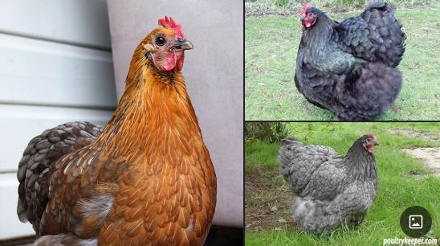
Asil Chicken
The Asil or Aseel is an Indian breed or group of breeds of game chicken. It is distributed in much of India, particularly in the states of Tamil Nadu, Andhra Pradesh, Chhattisgarh and Odisha; it has been exported to several other countries. Similar fowl are found throughout much of Southeast Asia.
Egg size: Small
Temperament: Aggressive
Recognized variety: Wheaten, White, Red Wheaten, Fawn, Grey
Egg color: Light Brown
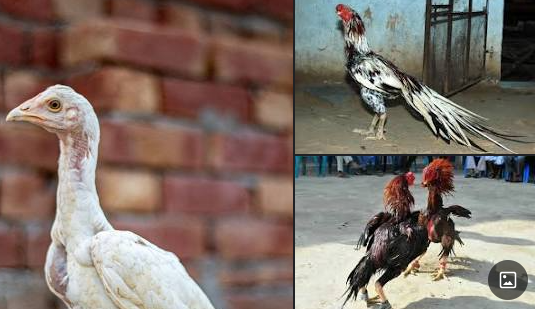
Shamo Chickens
Shamo is an overall designation for gamefowl in Japan. There are seven recognised breeds of Shamo chicken in Japan, all of which are designated Natural Monuments of Japan. The Shamo breeds are thought to derive from fighting chickens of Malay type brought from Thailand in the early part of the 17th century.
Primary use: Exhibition
Egg size: Medium
Temperament: docile
Recognized variety: Wheaten, Black
Egg color: Brown
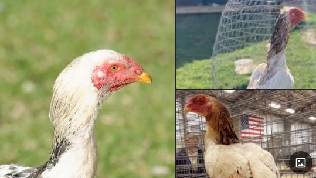
Lohman Brown
he Lohmann Brown is a variety of chicken, raised specifically for egg-laying productivity. It is of crossbreed origin, selectively bred from lines of Rhode Island breed and White Rock breeds. They start to lay at about 19 weeks, producing up to 320 eggs to an age of 72 weeks.
Produces 380 eggs annually.
Text by The Happy Chicken Coop
The Lohmann Brown is very friendly.

Araucana
The Araucana is a breed of domestic chicken from Chile. Its name derives from the Araucanía region of Chile where it is believed to have originated. It lays blue-shelled eggs, one of very few breeds that do so. Breed standards for the Araucana vary from country to country.
Primary use: Egg
Recognized variety: Black, White
Egg color: Blue
Origin: Chile
Skin colour: white
Egg production: 250 blue or green eggs per year.
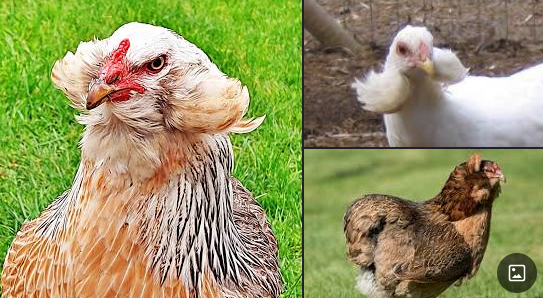
Australorp
The Australorp is a chicken breed of Australian origin, developed as a utility breed with a focus on egg laying and is famous for laying more than 300 eggs.
Primary use: Egg, Meat
Egg production (annual): 260
Egg size: Large
Temperament: docile, Hardy
Recognized variety: Blue, Black, White
Egg color: Brown
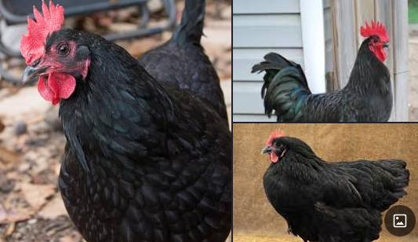
Japneese Bantam
The Japanese Bantam or Chabo is a Japanese breed of ornamental chicken. It is a true bantam breed, meaning that it has no large fowl counterpart. It characterised by very short legs and a large upright tail that reaches much higher than the head of the bird.
Primary use: Exhibition
Recognized variety: Wheaten, Black, White
Egg color: Cream, Tinted
Origin: Japan
Japanese bantam lay around 75 lovely tiny eggs per year.
Text by Backyard Chicken Coops.
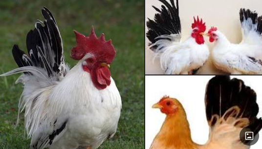
Cochin
The Cochin is a breed of large domestic chicken. It derives from large feather-legged chickens brought from China to Europe and North America in the 1840s and 1850s. It is reared principally for exhibition. It was formerly known as Cochin-China.
Primary use: Exhibition
Egg production (annual): 100
Egg size: Medium
Temperament: Calm, friendly, Quiet
Recognized variety: Red, Blue, Black, White
Egg color: Brown
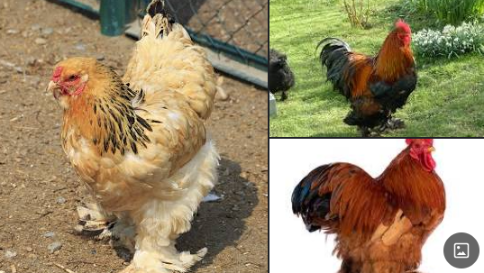
Wyandotte
The Wyandotte is an American breed of chicken developed in the 1870s. It was named for the indigenous Wyandot people of North America. The Wyandotte is a dual-purpose breed, kept for its brown eggs and its yellow-skinned meat. It is a popular show bird, and has many color variants.
Primary use: Egg, Meat
Egg production (annual): 210
Egg size: Large
Recognized variety: Red, Blue, Black, White
Egg color: Brown
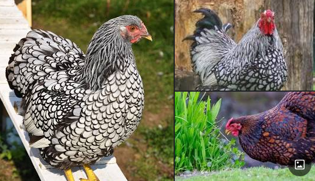
Jersey-Giant
The Jersey Giant is an American breed of domestic chicken. It was created in Burlington County, New Jersey, in the late 19th century. As the name suggests, it is a large breed, and is among the heaviest of all chicken breeds.
Primary use: Egg, Meat
Egg production (annual): 260
Egg size: Large
Temperament: docile, Calm
Recognized variety: Blue, Black, White
Egg color: Brown
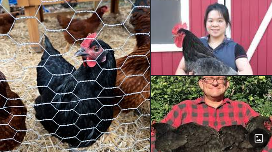
Burmese
The Burmese or Burmese Bantam is a British breed of bantam chicken. It apparently originated in Myanmar, formerly Burma, in the latter part of the nineteenth century. By the time of the First World War it was thought to be extinct.
Origin: Myanmar (Burma), United Kingdom
Higher classification: Red junglefowl
Rank: Animal breed
Egg colour: white
Use: ornamental
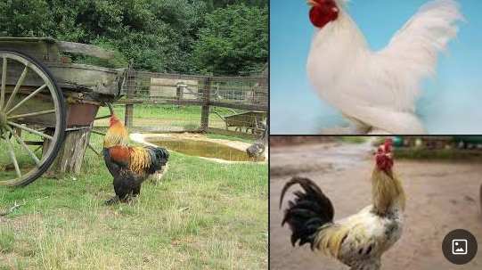
Kadaknath
Kadaknath, also called Kali Masi, is an Indian breed of chicken. They originated from Dhar and Jhabua, Madhya Pradesh. These birds are mostly bred by the rural and tribals. There are three varieties: jet black, golden and pencilled.
Origin: Madhya Pradesh
Egg color: Cream
Skin color: Greyish Black with a Turquoise glow
Difference between Ayam Cemani and Kadaknath:
Ayam Cemani has pointier combs. Kadaknath chickens come in other colors, while Ayam Cemani only comes in black. The Kadaknath is a world-famous black meat bird. Some say it's tastier and more protein-packed compared to other chickens.
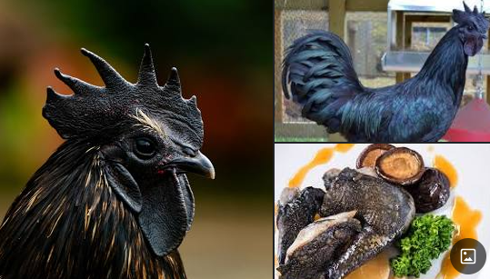
ISA-Brown
The ISA Brown is a crossbreed of chicken, with sex-linked coloration. It is thought to have been the result of a complex series of crosses including but not limited to Rhode Island Reds and Rhode Island Whites, and contains genes from a wide range of breeds, the list of which is a closely guarded secret.
Origin: France
Egg color: brown
Other names: Hubbard Brown, Brown, Red Sexlinks
They can lay upto 300 brown eggs per year

Padovana
The Padovana or Padovana dal gran ciuffo is an ancient Italian breed of small crested and bearded chicken. It originates in, and is named for, the city and surrounding province of Padua, in the Veneto region of north-eastern Italy.
Primary use: ornamental
Egg size: Small
Temperament: Confident
Recognized variety: Black, White, Lavender
Egg color: Cream, Light Brown
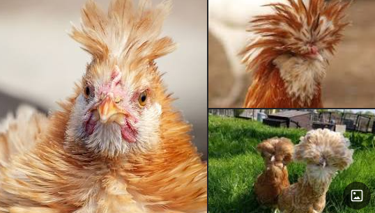
Frizzle
The Frizzle is a breed of chicken with characteristic curled or frizzled plumage. While the frizzle gene can be seen in many breeds, such as the Pekin and Polish, the Frizzle is recognised as a distinct breed in a number of European countries and Australia.
Primary use: eggs
Egg size: Small
Temperament: Hardy
Recognized variety: Blue, Black, White
Egg color: White, Tinted
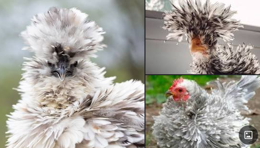
Feral
Feral chickens are derived from domestic chickens (Gallus gallus domesticus) who have returned to the wild. Like the red junglefowl (the closest wild relative of domestic chickens), feral chickens will roost in bushes in order to avoid predators at night.
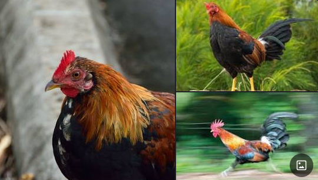
Serama
The Serama, also called the Malaysian Serama, is a bantam breed of chicken originating in Malaysia within the last 50 years.
Primary use: Exhibition
Temperament: Confident, Calm
Recognized variety: Wheaten, Chocolate, Blue, Black, White, Gray
Origin: Malaysia
Serama hens are capable of laying up to four eggs a week (200-250 per year)
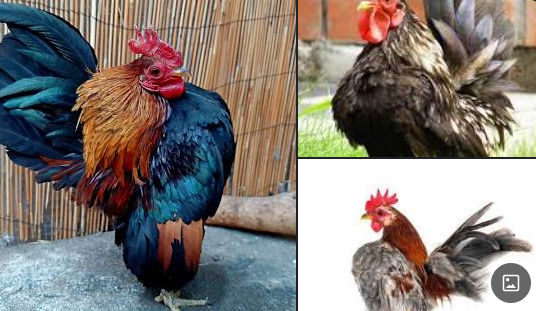
Naked-Neck
The Naked Neck is a breed of chicken that is naturally devoid of feathers on its neck and vent. The breed is also called the Transylvanian Naked Neck, as well as the Turken. The name "Turken" arose from the mistaken idea that the bird was a hybrid of a chicken and the domestic turkey.
Primary use: Egg, Meat
Egg production (annual): 100
Egg size: Medium
Temperament: Cold hardy
Recognized variety: Black, Blue, Buff, Cuckoo, Red, White
Egg color: Light Brown
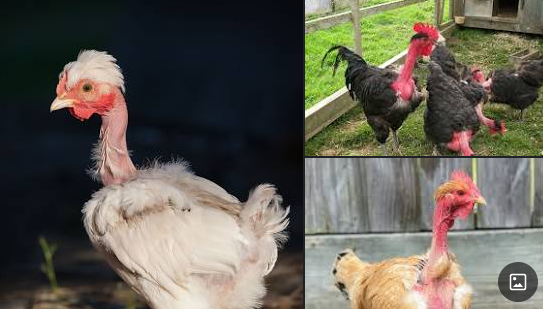
New Hemisphere Red
The New Hempshire Red or New Hampshire is an American breed of chicken. It was developed in the early twentieth century in the state of New Hampshire by selective breeding of Rhode Island Red stock; no other breed was involved. It is fast-growing, early-maturing, quick-feathering, and yields a meaty carcass.
Primary use: Egg, Meat
Egg production (annual): 280
Egg size: Large
Temperament: docile, Hardy
Egg colour: Brown
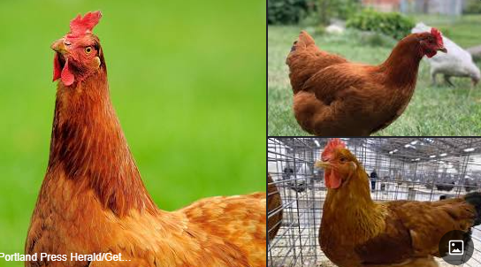
Fayoumi
The Fayoumi or Egyptian Fayoumi is an Egyptian breed of chicken. It originates from - and is named for - the governorate of Fayoum, which lies south-west of Cairo and west of the Nile. It is believed to be an ancient breed.
Primary use: Egg
Egg production (annual): 150
Egg size: Medium
Temperament: Flighty
Recognized variety: Silver
Egg color: Tinted, Off-White
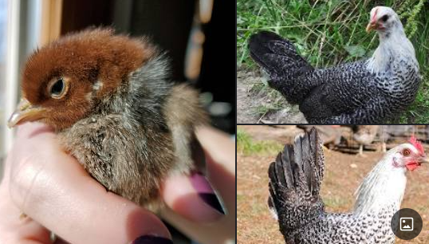
Dong Tao
Dong Tao chicken, also called Dragon Chicken, is a rare Vietnamese chicken breed with enlarged feet, that originates from the village Đông Tảo in Khoái Châu District near Hanoi. Dong Tao chickens are valued as a delicacy in Vietnam, and they were once bred exclusively to be served to the royal family and mandarins.
Origin: Khoái Châu
Other names: Dragon Chicken; gà Đông Tảo

Barnevelder
The Barnevelder is a Dutch breed of domestic chicken. It resulted from cross-breeding between local Dutch chickens and various "Shanghai" birds imported from Asia to Europe in the later part of the nineteenth century; these may have been of Brahma, Cochin or Croad Langshan type.
Primary use: Egg
Egg production (annual): 180
Egg size: Large
Temperament: Lively, friendly, Quiet, Active
Recognized variety: Blue, Silver
Egg color: Dark Brown
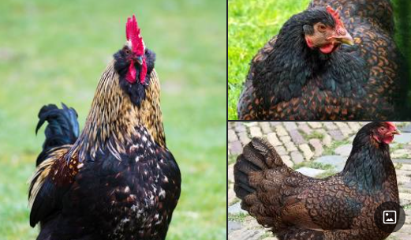
Amrock
The Amrock is a Chicken breed, which got developed in America, and has the same ancestry lines of the barred Plymouth Rock. The main differences between the two breeds is mainly the productive abilities. It can be said that the Amrock is a utility form of the barred Plymouth Rock and is being raised mostly in Europe.
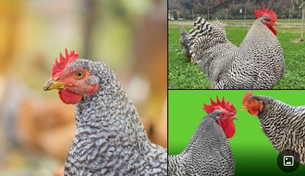
Sundheimer
The Sundheimer has a single comb, red earlobes, and whitish-yellow legs with light feathering, which extends to cover the outer toe. They are tame birds indeed, that grow and fatten rapidly, and provide meat of high quality. The Sundheimer is available only in the columbian color-variety.
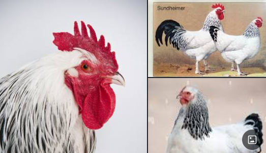
Sulmtaler
The Sulmtaler is an Austrian breed of domestic chicken. It originates in the Sulmtal, the valley of the Sulm river, in southern Styria, in the south-east of Austria, and takes its name from that valley.
Primary use: dual-purpose meat/eggs
Egg production (annual): 140
Egg size: Medium
Temperament: Hardy
Recognized variety: White
Egg color: Cream, Light Brown
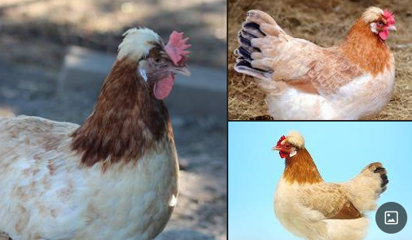
Sebright
The Sebright is a British breed of bantam chicken. It is a true bantam - a miniature bird with no corresponding large version – and is one of the oldest recorded British bantam breeds.
Primary use: Exhibition
Egg production (annual): 52
Egg size: Small
Temperament: friendly, Active
Recognized variety: Silver, Gold
Egg color: White
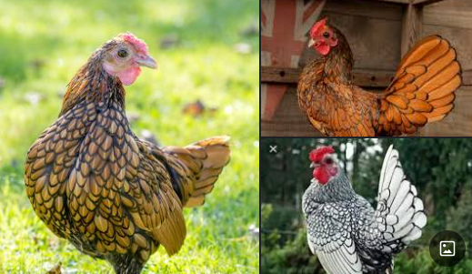
Kuroiler
The Kuroiler is a hybrid breed of chicken developed by the Keggfarms Group in Gurgaon, Haryana. Kuroilers are derived from crossing either coloured broiler males with Rhode Island Red females, or, White Leghorn males crossed with female Rhode Island Reds.
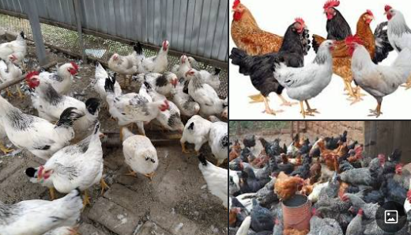
Legbar
The Legbar is a rare British auto-sexing breed of chicken. It was created in the early twentieth century by Reginald Crundall Punnett and Michael Pease at the Genetical Institute of Cambridge University.
Primary use: eggs
Egg production (annual): 180
Egg size: Medium
Temperament: Forager
Recognized variety: Cream, Silver, Gold
Egg color: Blue, Green
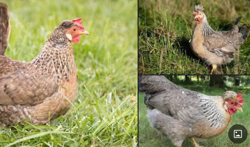
Vorwerk
The Vorwerk is a breed of chicken originating in Germany. Though it is unrelated to the German company which produces the Vorwerk vacuum cleaner, it is the only chicken to share its name with a brand of household appliance. A rare fowl, it has distinctive black-and-gold plumage.
Primary use: Exhibition
Egg production (annual): 170
Egg size: Medium
Temperament: Active, Alert
Egg color: Cream
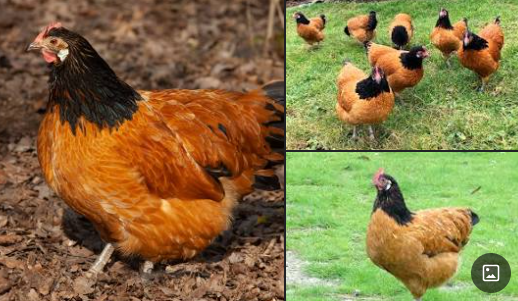
Indian Giant
Índio Gigante, also known as Indian Giant, is a breed of domestic chicken originally developed in Brazil. It is one of the largest chicken breeds in the world, especially in terms of height.
Egg color: white, beige, red, blue or green
Skin color: yellow

Green Legged Partridge Hen
The Green-legged Partridge is an old breed of chicken indigenous to Poland. It is characterised by the unusual reseda green colour of the shanks.
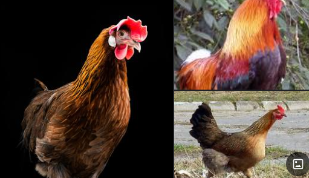
Pekin
The Pekin Bantam is a British breed of bantam chicken. It derives from birds brought to Europe from China in the nineteenth century, and is named for the city of Peking where it was believed to have originated. It is a true bantam, with no corresponding large fowl.
Primary use: Egg, Exhibition
Egg size: Small
Temperament: docile
Recognized variety: Blue, Black, White, Lavender
Egg color: Brown
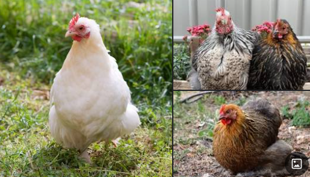
Faverolles
The Faverolles is a French breed of chicken. The breed was developed in the 1860s in north-central France, in the vicinity of the villages of Houdan and Faverolles. The breed was given the name of the latter village and the singular is thus also Faverolles, not Faverolle. The final "s" is silent in French.
Primary use: Egg, Meat
Egg production (annual): 240
Egg size: Medium
Temperament: docile, Gentle
Recognized variety: White
Egg color: Light Brown, Pinkish
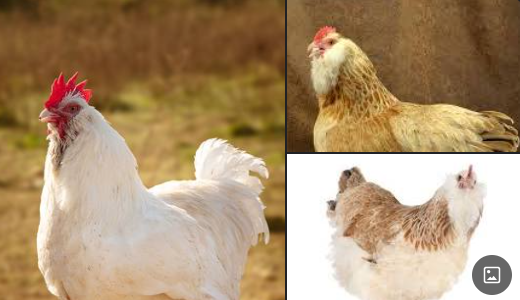
Swedish Flower Hen
The Swedish Flower Hen, Swedish: Skånsk Blommehöna, is an endangered traditional Swedish breed of domestic chicken. It is one of eleven traditional chicken breeds in Sweden.
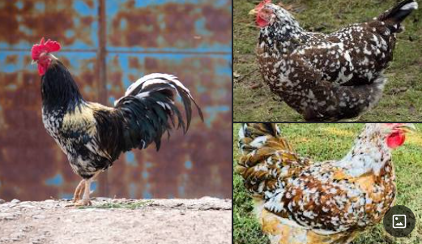
Welsummer
The Welsummer or Welsumer is a Dutch breed of domestic chicken. It originates in the small village of Welsum, in the eastern Netherlands. It was bred at the beginning of the twentieth century from local fowls of mixed origin: Rhode Island Reds, Barnevelders, Partridge Leghorns, Cochins, and Wyandottes.
Primary use: Egg
Egg production (annual): 180
Egg size: Large
Temperament: friendly, intelligent
Recognized variety: Gold Duckwing, Partridge, Silver Duckwing
Egg color: Dark Brown
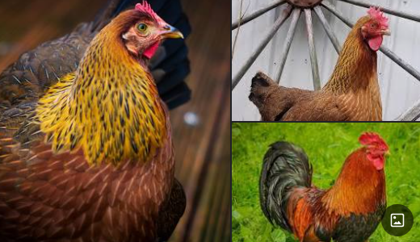
Bielefelder Kennhuhn
The Bielefelder Kennhuhn or Bielefelder is a German breed of domestic chicken. It was developed in the area of Bielefeld in the 1970s by Gerd Roth, who cross-bred birds of Malines and Welsumer stock with American Barred Rocks to create the breed.